本文是《HTML5与CSS3基础语法自学教程》的第二篇，首发于【前端课湛】微信公众号。
导读：本小节主要讲解 HTML 的基础语法内容，将通过编写第一个 HTML 页面来学习 HTML 的基本结构、<!DOCTYPE> 声明、元素和注释等内容。通过本小节的学习可以对 HTML 的基础语法有个全面的掌握，这也是我们后续学习 HTML 其他内容时必须要用到的。
提示：学习 HTML 基础语法需要用到开发编辑器，这里使用 Visual Studio Code 编辑器。当然，你也可以选择你更熟悉的开发编辑器来使用。关于 Visual Studio Code 编辑器的基本操作可以参考本小节中扩展阅读。
打开 Visual Studio Code 编辑器新建一个文件，并且保存为 .html 或 .htm 扩展名的文件。然后，在新建的 HTML 文件中输入 HTML，这时 Visual Studio Code 编辑器会弹出提示框。
如下图所示展示了输入之后的提示框：
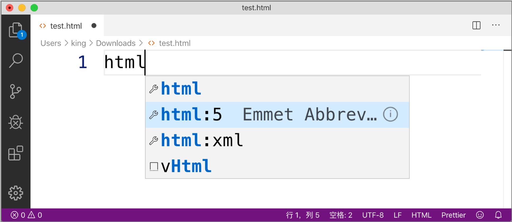
根据 Visual Studio Code 编辑器的提示，选择【html : 5】这个选项，就创建好了一个 HTML 的基本结构。
如下图所示展示了创建之后的 HTML 模板内容：
<!DOCTYPE html>
<html lang="en">
<head>
<meta charset="UTF-8">
<meta name="viewport" content="width=device-width, initial-scale=1.0">
<meta http-equiv="X-UA-Compatible" content="ie=edge">
<title>Document</title>
</head>
<body>
</body>
</html>说明：【html : 5】选项表示使用 HTML5 版本的模板。
创建了 HTML5 版本的基本结构，接下来我们以从上到下的顺序，对这个基本结构中比较核心的内容进行简单地初步了解。
<!DOCTYPE html>在 HTML5 基本结构的第一行，这块内容被称为 HTML 声明。HTML 声明的作用是浏览器运行该 HTML 页面时，告知浏览器当前 HTML 页面的版本。
<html lang="en">
<head></head>
<body></body>
</html>除了第一行的 HTML 声明之外，其余内容才算是 HTML 的基本结构。接下来我们进行分别说明：
<html> 元素：表示当前 HTML 页面的根元素，用来包含所有其他 HTML 元素。<head> 元素：表示当前 HTML 页面的头部，用来定义当前 HTML 页面的基本信息，例如标题、关键字、作者等内容。<body> 元素：表示当前 HTML 页面的主体，用来定义最终显示在浏览器窗口的内容。HTML 页面的第一行一般都是编写 HTML 声明。HTML 声明的作用就是当浏览器运行该 HTML 页面时来告知浏览器当前 HTML 页面的版本，这样浏览器会准确地进行解析并展示其内容。
HTML 声明必须要编写在 HTML 页面的第一行，一般都是在 <html> 元素之前。并且 HTML 声明之前不能存在空行或者空格，不然会导致 HTML 声明失效。
浏览器发展至今，其功能也非常的强大。所以，如果 HTML 页面没有定义 <!DOCTYPE> 声明的话，浏览器也可以正确地解析该 HTML 页面并进行显示。但是，还是建议在编写 HTML 页面时定义 <!DOCTYPE> 声明。
再有，我们需要注意 HTML5 版本和 HTML 4.01 版本的声明是不同的。
<!DOCTYPE html><!DOCTYPE HTML PUBLIC "-//W3C//DTD HTML 4.01//EN" "http://www.w3.org/TR/html4/strict.dtd">该声明是严格型约束，该 DTD 文件包含所有 HTML 元素和属性，但不包括展示性的和弃用的元素（比如 font），也不允许框架集（Framesets）。
<!DOCTYPE HTML PUBLIC "-//W3C//DTD HTML 4.01 Transitional//EN" "http://www.w3.org/TR/html4/loose.dtd">该声明是过渡型约束，该 DTD 文件包含所有 HTML 元素和属性，包括展示性的和弃用的元素（比如 font），但不允许框架集（Framesets）。
<!DOCTYPE HTML PUBLIC "-//W3C//DTD HTML 4.01 Frameset//EN" "http://www.w3.org/TR/html4/frameset.dtd">该声明是框架集约束，该 DTD 等同于 HTML 4.01 Transitional，但允许框架集内容。
通过两个版本的 HTML 声明内容，我们也可以看出 HTML5 版本的声明内容简化了不少。不仅没有了版本信息，也不需要约束文件。
说明：约束文件指的是如上述
strict.dtd、loose.dtd或者frameset.dtd文件。HTML 的约束文件是用来定义 HTML 的元素以及编写规范。
除了 HTML 声明之外，其他内容都是 HTML 元素。首先，需要搞清楚元素（Element）和标签（Tag）之间的区别，如下图所示：
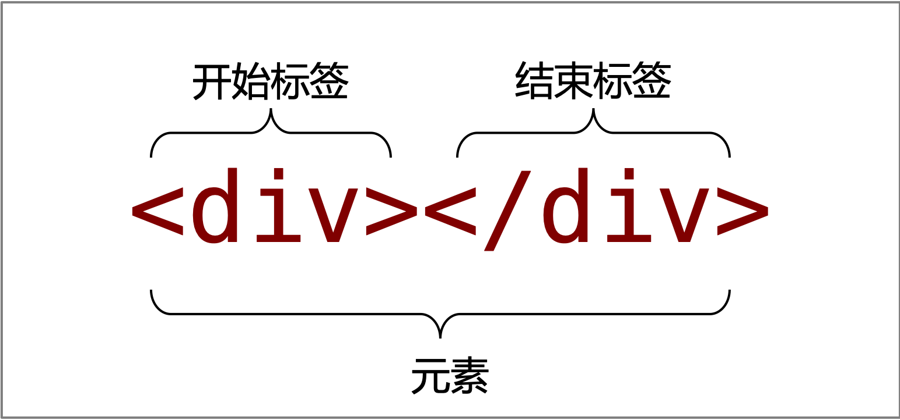
HTML 元素是 HTML 的重要组成部分之一，如下图所示展示了 HTML 元素的语法结构：
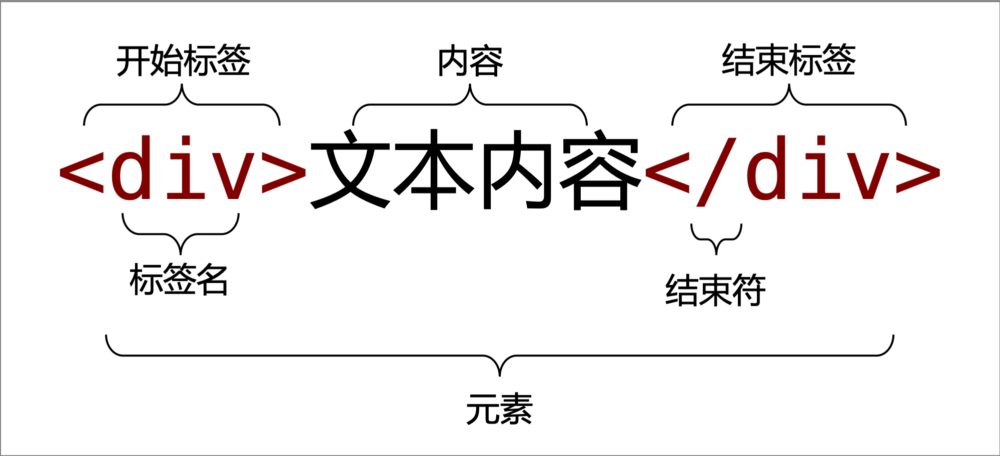
HTML 元素可以分为闭合元素和空元素两种类型：
<div>文本内容</div><input type="text">注意：在编写 HTML 元素时，如果是闭合元素不要忘记结束标签，如果是空元素不要编写结束标签。目前的开发编辑器会有相应的提示功能。
由于 HTML 是大小写不敏感的，所以 HTML 元素的元素名写成大写或小写都是允许的，例如 <div>、<Div> 和 <DIV> 是一样的含义。
但是 W3C 组织早在 HTML4 版本时，建议元素名使用小写形式。后来出现的 XHTML 是强制元素名必须使用小写形式。所以，元素名的编写还是尽量使用小写形式，而且现在的开发编辑器的提供功能也都是小写形式的。
注意：
<html>元素是比较特殊的元素，称为根元素。在一个 HTML 页面中只能存在一个<html>元素，即使编写了多个<html>元素，运行 HTML 页面时浏览器也会自动忽略。
HTML 标签实际上是 HTML 元素的组成部分之一，分为开始标签和结束标签。
无论是开始标签还是结束标签都具有的结构：
如下图所示展示了标签的结构：
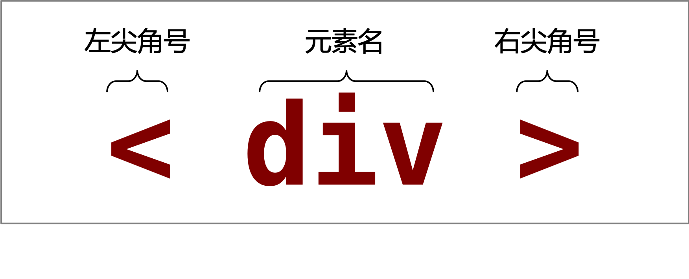
而结束标签相比开始标签多了个结束符（/）。如下图所示展示了结束标签的结构：
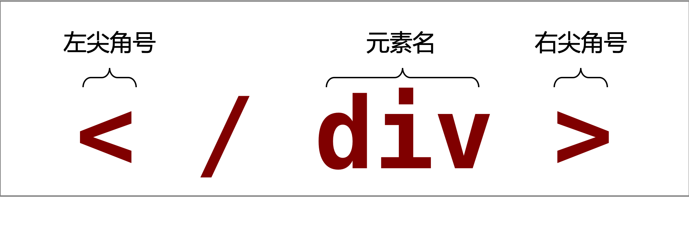
属性是 HTML 元素的重要组成部分，用来定义某个元素的信息。例如为 <div> 元素定义 ID 属性，就是定义了唯一标识。
属性定义在元素的开始标签中，这样无论是闭合元素还是空元素都可以正常使用属性。属性的语法结构是键值对形式的。如下图所示展示了属性的语法结构：
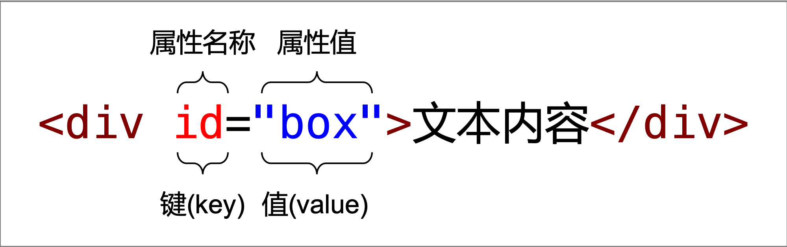
注意：不同的属性，对应不同类型的值。
与元素的情况类似，属性的编写 W3C 组织也是建议使用小写形式。目前开发编辑器的提示功能也都是提供小写形式的。
同一个元素是允许编写多个不同的属性的，但在同一个元素中不能同时定义多个相同的属性。再有，HTML 元素的属性可以划分为以下 4 种：
<form> 元素的 action 属性等。v-if 属性等。HTML 头部具体是指 <head> 元素以及该元素所包含的所有元素，其作用是用来定义当前 HTML 页面的基本信息，例如 HTML 页面的标题、编写格式、作者、关键字以及描述等内容。
<head> 元素<head> 元素是 HTML 页面基本结构中的组成部分，其作用是定义 HTML 页面的基本信息。可定义在 <head> 元素内的元素有如下：
<title> 元素：定义 HTML 页面的标题，显示在浏览器的标题或标签页上。如下示例代码所示展示了 <title> 元素的用法：<title>Document</title><base> 元素：定义 HTML 页面中所有相对 URL 的根 URL。如下示例代码所示展示了 <base> 元素的用法：<base target="_blank" href="http://www.example.com/">注意：一个 HTML 页面只能定义一个
<base>元素。如果一个 HTML 页面定义了多个<base>元素的话，则只有第一个<base>元素有效。
<link> 元素：定义 HTML 页面引入的外部资源，比较常见的是引入外部 CSS 文件或图标文件等。<link> 元素引入外部 CSS 文件：<link href="link-element-example.css" rel="stylesheet"><link> 元素引入外部图标文件：<link rel="icon" href="favicon.ico"><style> 元素：定义 HTML 页面的 CSS 样式，一般称为内嵌样式表。如下示例代码所示展示了通过 <style> 元素定义内嵌样式表：<style type="text/css">
body {
color:red;
}
</style><meta> 元素：定义 HTML 页面的元数据信息，例如编码格式、作者、关键字等。如下示例代码所示展示了通过 <meta> 元素的用法：<meta charset="UTF-8"><script> 元素：定义 HTML 页面的可执行的脚本，一般多为 JavaScript 脚本。如下示例代码所示展示了通过 <script> 元素定义 JavaScript 脚本代码：<script type="text/javascript">
console.log('打印一个测试信息.');
</script><noscript> 元素：定义当 HTML 页面的脚本代码不被支持或者浏览器关闭了脚本执行时的替代内容。如下示例代码所示展示了 <noscript> 元素的用法：<noscript>
<a href="http://www.example.com/">这是一个链接</a>
</noscript><command> 元素：定义 HTML 页面允许用户可以调用的命令。该元素已被废弃！<meta> 元素<meta> 元素是用来定义不能由 <base>、<link>、<script>、<style> 和 <title> 元素定义的元数据信息。并且 <meta> 元素是个空元素。
<meta> 元素常用的用法如下所示：
<meta name="keywords" content="HTML, CSS, XML, XHTML, JavaScript"><meta name="description" content="Free Web tutorials on HTML and CSS"><meta name="author" content="KingJ"><meta http-equiv="refresh" content="30"><meta charset="UTF-8"><meta name="viewport" content="width=device-width, initial-scale=1.0">提示：除了以上罗列的常见用法之外，
<meta>元素还有很多其他用法，具体的用法在对应的章节进行详细讲解。
与很多开发语言类似，HTML 语言提供了编写注释的语法内容。在浏览器运行 HTML 页面时，浏览器会自动忽略注释里面的内容，用户是看不到 HTML 页面中有关注释的内容的。
当一段内容被 <!-- 和 --> 包裹起来时，那么这段内容就是一个注释内容了。如下图所示展示了 HTML 注释的语法结构：
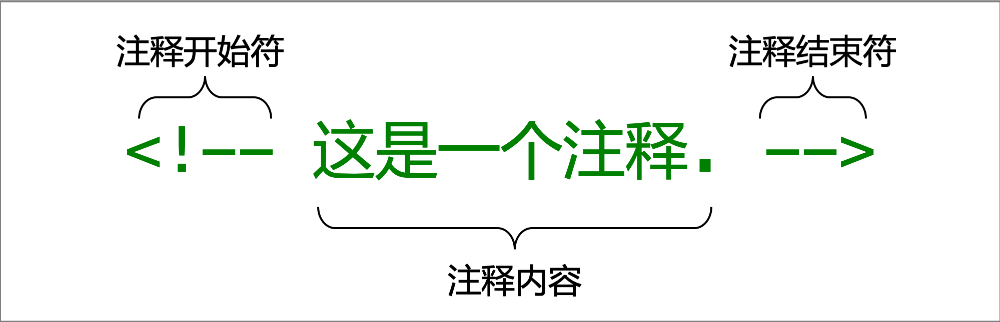
注释可以用来更好地描述某一段 HTML 代码的含义或作用。无论是自己一段时间之后回顾（review）代码，还是别人处理这段代码，注释都是起到了很大作用的。
说明：编写注释也是程序员在开发工作中的一个优良习惯，希望你可以学习并保持这一优良习惯。
Visual Studio Code 编辑器是 Microsoft 公司在 2015 年 4 月 30 日 Build 开发者大会上推出的一款运行于 Mac OS X、Windows 和 Linux 之上的，针对于编写现代 Web 和云应用的跨平台源代码编辑器。
我们可以通过访问 Visual Studio Code 编辑器的 官网 来了解，如下图所示展示了 Visual Studio Code 官网的部分界面：
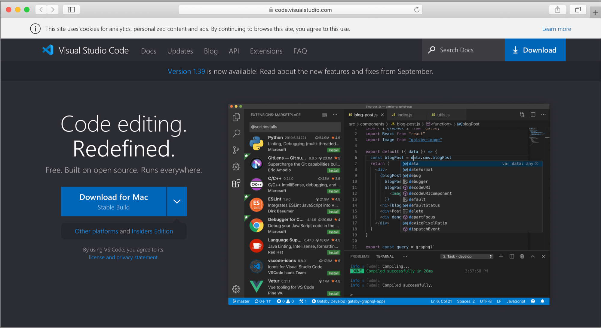
Visual Studio Code 编辑器的官网会自动识别我们当前的操作系统，并提供对应的安装包下载。我们需要做的就是下载对应版本的安装包到本地电脑，再进行安装即可。
提示：这里有关具体的下载和安装步骤就不做详细说明了，因为非常的简单。
一般情况下，安装好的 Visual Studio Code 编辑器的界面就是中文的。但也不妨有特殊情况出现，如果你在安装完 Visual Studio Code 打开后发现界面是英文（或者是任何其他语言）界面可以通过扩展安装中文语言插件来解决。具体可以按照如下步骤进行操作：
提示：以下操作请在你的电脑可以正常联网的情况下进行操作。
打开 Visual Studio Code 编辑器之后，我们可以看到在最左边是有 5 个菜单的。其中第 5 个菜单（图标）表示是扩展，如下图所示展示了扩展菜单所在的位置：
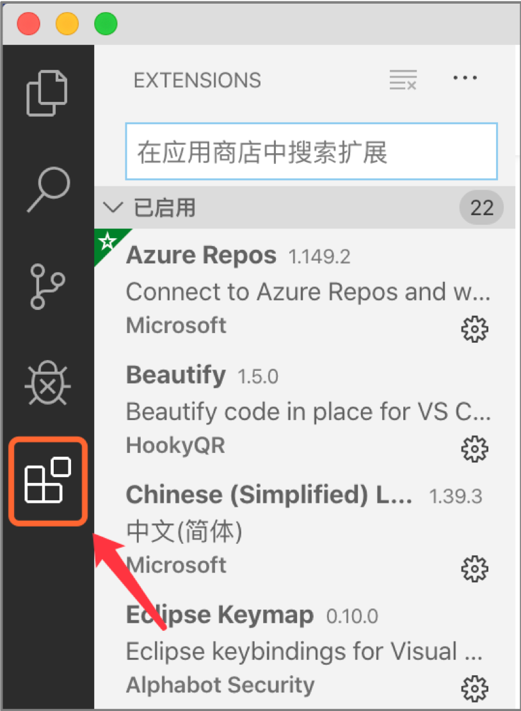
在扩展界面的搜索框中，输入【Chinese】关键字来搜索中文语言插件包。搜索结果中的第一个结果一般就是我们要找的中文语言插件包，如下图所示展示了搜索结果：
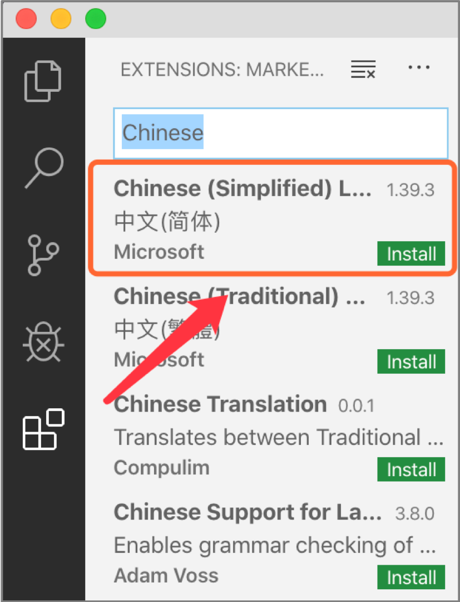
在搜索中第一个结果点击【Install】按钮，来安装对应的插件包即可。
安装成功之后 Visual Studio Code 编辑器会弹出让你重启编辑器的提示框，如下图所示展示安装插件成功之后的提示框：
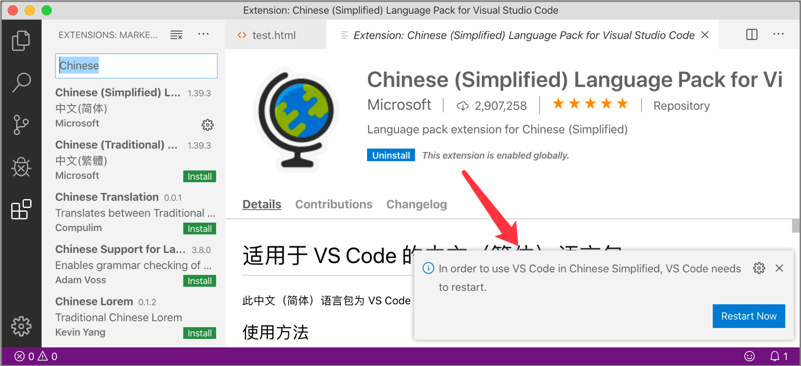
这时点击提示框中的【Restart Now】按钮，来重启 Visual Studio Code 编辑器。重启之后，Visual Studio Code 编辑器的界面就成功地改为了中文。如下图所示展示了中文操作界面的 Visual Studio Code 编辑器：
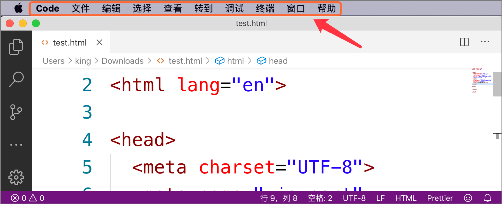
Visual Studio Code 编辑器新建文件有两种方式进行操作：
点击 Visual Studio Code 编辑器顶部菜单中的【文件】，在弹出的菜单中选择【新建文件】选项，完成新建文件的操作。
如下图所示展示了新建文件的菜单位置：
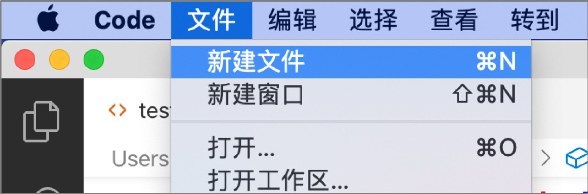
如果你的操作系统是 Windows 的话，可以通过【Ctrl+N】快捷键直接创建一个新的文件。如果你的操作系统是 Mac OS 的话，可以通过【Command+N】快捷键直接创建一个新的文件。
注意：新建的文件在没有保存的情况下，是没有任何扩展名的。也就是说，新建的文件不属于任何文件类型。
Visual Studio Code 编辑器保存文件有两种方式进行操作：
点击 Visual Studio Code 编辑器顶部菜单中的【文件】，在弹出的菜单中选择【保存】选项，完成保存文件的操作。
如下图所示展示了保存文件的菜单位置：
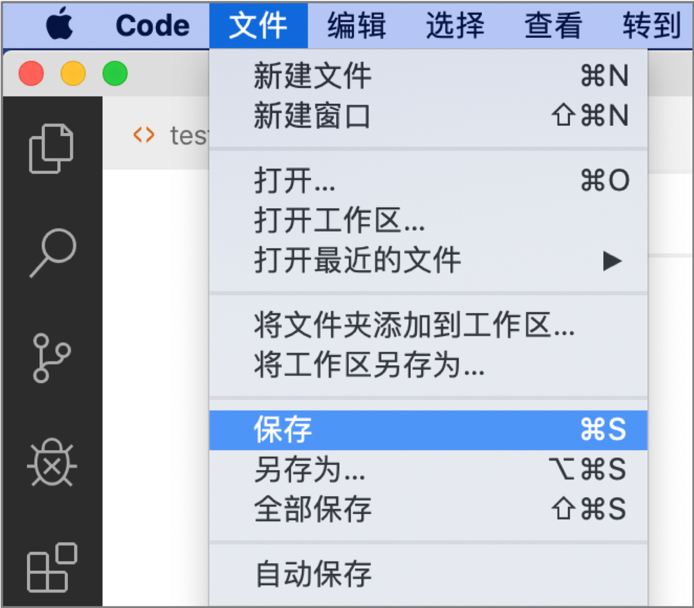
如果你的操作系统是 Windows 的话，可以通过【Ctrl+S】快捷键完成保存文件的操作。如果你的操作系统是 Mac OS 的话，可以通过【Command+S】快捷键完成保存文件的操作。
注意：保存文件的时候一定要指定文件的扩展名。如果不指定文件的扩展名，该文件将不属于任何文件类型，并且会影响该文件的内容编写。
本小节从 HTML 基本结构开始讲解，然后根据 HTML 基本结构进行分别讲解，其中包括 <!DOCTYPE> 声明、HTML 元素、HTML 头部以及 HTML 注释等内容。其中：
<!DOCTYPE> 声明：重点在于其作用是什么、用法与注意事项，以及 HTML 4.01 和 HTML 5 两个版本的写法。<meta> 元素的用法。预告：下一节，我们介绍 CSS 的基本信息，其中包括 CSS 概念、CSS 的发展历程，以及 CSS 版本的发展历程等内容。